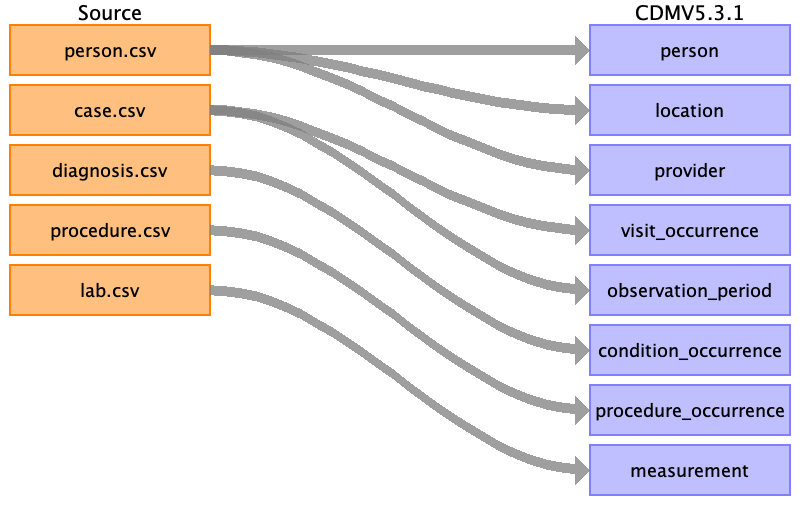

<h1>Source Data Mapping Approach to CDMV5.3.1</h1>



<h2>Contents</h2>

<ul><a href="person.html">person</a></ul>

<ul><a href="location.html">location</a></ul>

<ul><a href="provider.html">provider</a></ul>

<ul><a href="visit_occurrence.html">visit_occurrence</a></ul>

<ul><a href="observation_period.html">observation_period</a></ul>

<ul><a href="condition_occurrence.html">condition_occurrence</a></ul>

<ul><a href="procedure_occurrence.html">procedure_occurrence</a></ul>

<ul><a href="measurement.html">measurement</a></ul>

<ul><a href="source_appendix.html">source_appendix</a></ul>

